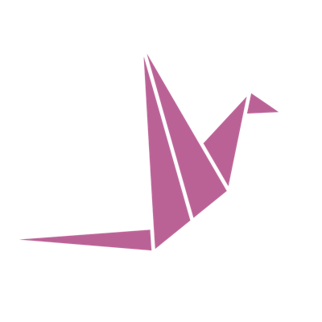

Every vendor will sell you an agent. None of them make your other agents better, act on your terms, or tell you which ones are working. That's where wysdym comes in — the harness where every action compounds into a revenue advantage.
Average GTM teams already run 3–5 agents in parallel. But isolated agents don't compound… and what doesn't compound doesn't grow revenue.
Drift compounds; nothing learns across the stack. Each agent keeps its own notes.
The same integrations wired into every agent — so you pay for the same retrieval a dozen times.
No human-in-the-loop, no audit trail, no feedback loop. So the agents never get smarter.
Every agent folds from the same sheet. Five components — the layer beneath your agents, not another agent vendor. Scroll: you make the folds yourself, and every fold lands a piece of the crane.
A typed knowledge graph of your business — 39 GTM domains, self-learning.
Salesforce, HubSpot, Gong, Slack, Drive, Notion — wired once, not per agent.
Outcome attribution to deal stages. Findings flag drift with the fix attached.
An open skill library any agent invokes over MCP — your playbook, executable.
One governed door: per-agent permissions, human-in-the-loop, receipts.
Every fold you just made is part of the crane. That's the platform: assembled, it flies.
Apply for access →wysdym is currently onboarding a select group of customers. Apply to run every agent on the harness; we take on the ones we can go deepest with.
The harness, unfolded — the questions we hear most.
Six sheets, six shapes — a fish, a boat, a star… one for each part of the harness. Tap the paper to fold the next one.